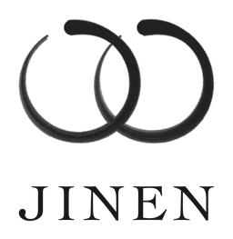

SAKRA
SAKRA acquires Japan’s enduring small and mid-sized companies as their owners retire, modernizes them with AI and holds them for the long term. Many of these companies have no successor. SAKRA keeps them, and the people and customers who depend on them, in business. Arata is co-founder and CEO.
sakra.com

- Japan market entry
- Brings overseas companies into Japan and supports their first year: partners, first customers, hiring and licensing. Brand and creative work with Ultra Super New, Tokyo.
- Secondaries and pre-IPO
- Secondary and pre-IPO shares in leading U.S. private companies, for families in Japan and Asia. JINEN introduces qualified families to licensed firms, which handle each transaction.
- Japanese art
- Works from Edo-period masters to modern nihonga, introduced to buyers privately or through the auction houses. Authentication rests with independent specialists and the auction houses.
- Real estate
- Off-market residences, historic townhouses and ryokan in Tokyo, Kyoto, Niseko and Karuizawa, from a single residence to a portfolio. A licensed brokerage handles each transaction.